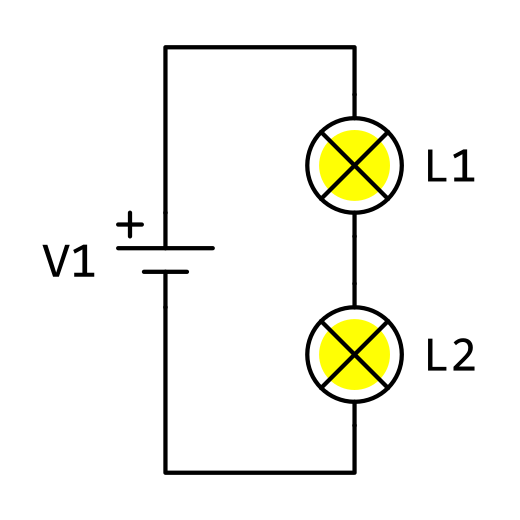
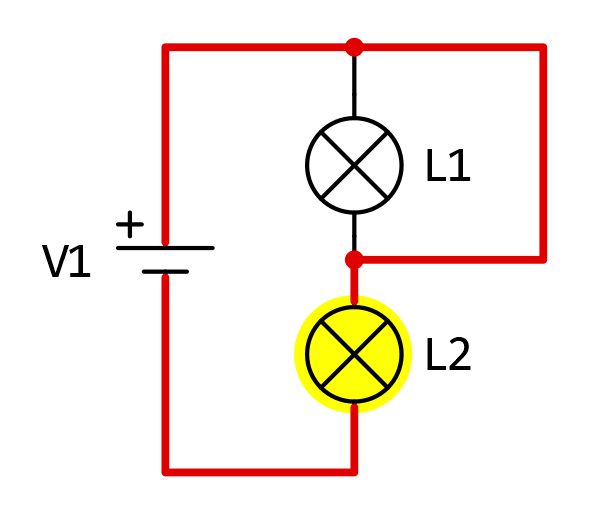
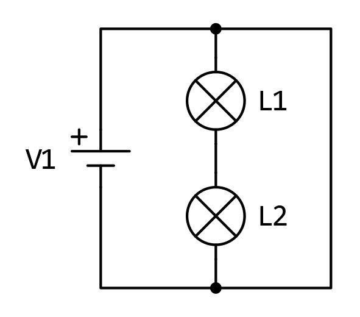
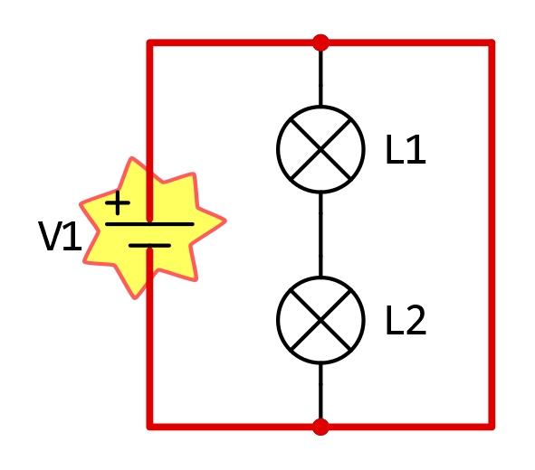
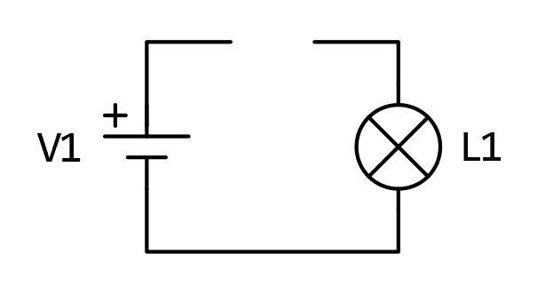
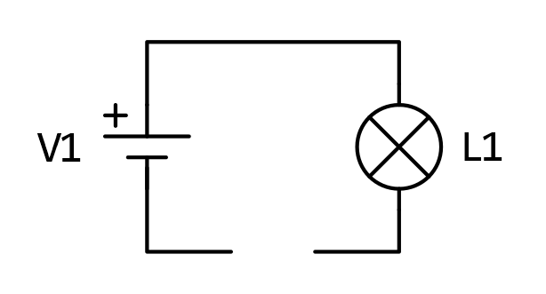
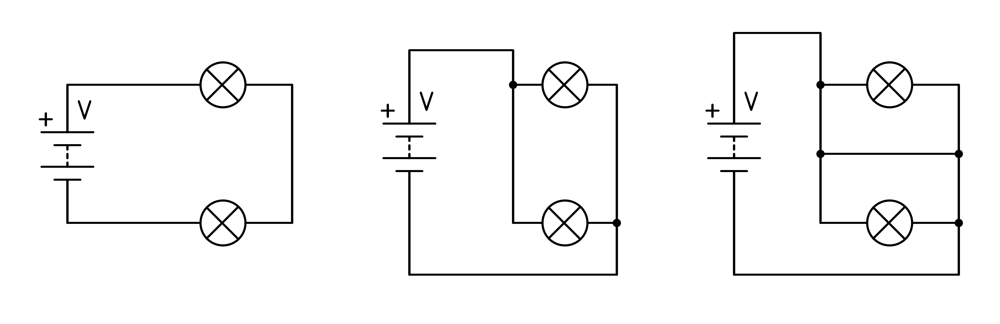

Serie, paralelo y cortocircuito¶
Los circuitos eléctricos pueden conectarse de muchas maneras posibles. Las conexiones más simples son la conexión en serie y la conexión en paralelo. Combinando ambas se consigue una conexión mixta.
La conexión en serie se utiliza cuando queremos que unos componentes afecten el comportamiento de los demás componentes. Así, el interruptor de la luz se colocará en serie con la bombilla para que pueda encenderla o apagarla.
La conexión en paralelo se utiliza cuando queremos que los componentes sean independientes. De esa manera, colocaremos las dos bombillas de una lámpara en paralelo para que al fundirse una de las bombillas la otra siga funcionando sin problema.
Por último, si las conexiones eléctricas están mal realizadas se puede producir un cortocircuito o un circuito abierto. Ambas impedirán que el circuito eléctrico funcione.
A continuación estudiaremos con más detalle todos estos tipos de conexiones.
Circuito en serie¶
En un circuito en serie los componentes están conectados en cadena, uno detrás de otro.
Características de un circuito en serie:
La corriente eléctrica que pasa por todos los componentes es la misma.
Esto significa que si quitamos o abrimos un componente, los demás componentes tampoco tendrán corriente y no funcionarán.
La tensión de la pila se divide entre los componentes conectados en serie, que tendrán, por lo tanto, una tensión menor que la pila.
Esto significa que las bombillas se iluminan menos cuando están en serie.
Conexión de un circuito en serie:

{kind=link}
{kind=link}
{kind=link}
Fallo de un componente en serie:
En un circuito en serie, si quitamos una de las bombillas, la otra deja de funcionar y se apaga.

Los sensores de las alarmas y otros sistemas de seguridad están conectados en serie. Si un componente falla o se rompe, todo el circuito dejará de funcionar y la alarma dará un aviso o la máquina peligrosa se parará.
Circuito en paralelo¶
En un circuito en paralelo los componentes están conectados entre sí por ambos lados.

Características de un circuito en paralelo:
La tensión eléctrica que llega a todos los componentes es la misma.
Esto significa que las bombillas tienen toda la tensión de la pila y se iluminan al máximo.
La corriente de la pila se divide entre los componentes conectados en paralelo. Por lo tanto, por las bombillas circulará una corriente menor que por la pila.
Conexión de un circuito en paralelo:
{kind=link}
{kind=link}
Fallo de un componente en paralelo:
Si quitamos una de las bombillas de un circuito conectado en paralelo, o si ésta falla, las demás bombillas seguirán funcionando.
Las bombillas y otros componentes comunes de una casa están conectados en paralelo. De esta forma, el fallo de un componente no impide funcionar a los demás. Si quitamos una bombilla de casa, las demás bombillas seguirán funcionando.
{kind=link}
Cortocircuito¶
Un cortocircuito es la unión de los dos terminales de un mismo componente con un cable. Cuando un componente está en cortocircuito, no puede funcionar porque toda la corriente se desviará por el cable. Si una pila o generador está en cortocircuito, toda la corriente que genera pasará por el cable y el generador o el cable se quemarán.
Cortocircuito en un componente:
En el siguiente esquema hay un cortocircuito en la primera bombilla. El cable llevará toda la corriente de manera que la bombilla de arriba L1 dejará de funcionar y la bombilla de abajo L2 se iluminará mucho más que si estuviera en serie.

En la siguiente imagen se puede ver el camino de la electricidad. Vemos cómo el cable es el camino preferido, de menor resistencia, de la corriente electrica. Por lo tanto toda la corriente eléctrica que antes pasaba por la bombilla L1 ahora pasa a través del cortocircuito.

{kind=link}
Cortocircuito en la pila:
En este esquema hay un cortocircuito entre los terminales de la pila. Esto significa que toda la corriente de la pila pasará por el cable y uno de los dos se quemará.
Las bombillas no se encienden porque no les llega corriente eléctrica.
Esquema del cortocircuito de pila y camino de la corriente.
 
{kind=link}
{kind=link}
Nota
No repitas este experimento bajo ninguna circunstancia, es muy peligroso.
Vídeo: batería de litio explota debido a un cortocircuito provocado.
Circuito abierto¶
Un circuito abierto es un circuito que no tiene camino para que circule la corriente eléctrica. Un circuito abierto se puede dar si falta algún cable para cerrar el circuito, si hay un interruptor abierto o si algún componente en serie está fundido.
Un circuito puede estar abierto si falta camino para que llegue la tensión positiva de la pila o si falta camino para que llegue la tensión negativa de la pila.
 {kind=link}
{kind=link}
Es lo primero que hay que comprobar cuando un aparato eléctrico no funciona ¿Está conectado?
Ejercicios¶
Ejercicios para identificar circuitos en serie, en paralelo, con cortocircuito en una bombilla o con cortocircuito en la pila.
{kind=link}
Cuestionarios¶
Cuestionario de tipo test para identificar circuitos en serie, en paralelo, con cortocircuito en la pila o con cortocircuito en la bombilla.